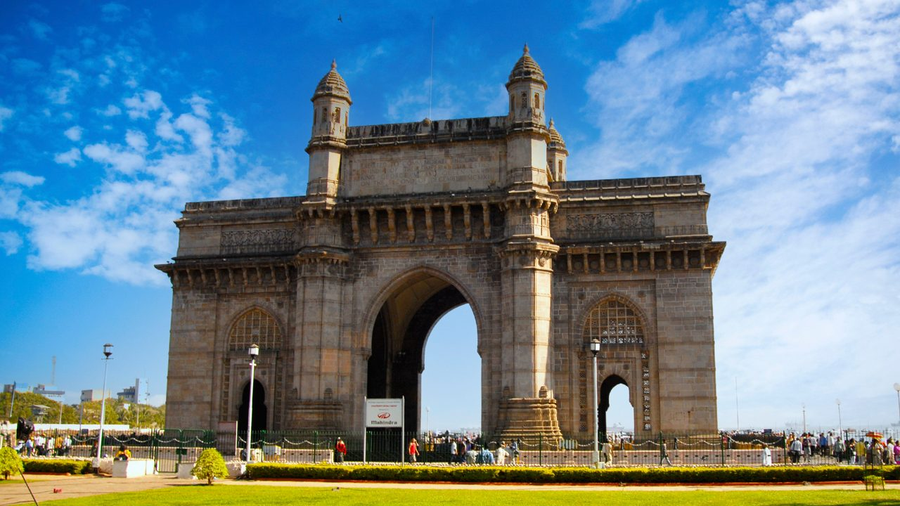
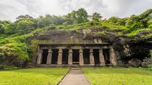
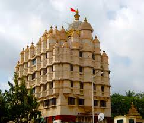

Mumbai

The Great History of Gateway of India:-
- Built in 1924 to commemorate the visit of King George V and Queen Mary to India in 1911.
- Designed in Indo-Saracenic style, blending Islamic, Hindu, and European architectural elements.
- Became a symbol of British rule and later Indian independence, as the last British troops left through this gateway in 1948.

The Great History of Elephant caves:-
- Date back to the 5th-7th century, built by Hindu rulers of the Kalachuri dynasty.
- Dedicated to Lord Shiva, with the famous Trimurti sculpture (three-faced Shiva).
- Named "Elephanta" by the Portuguese in the 16th century after they found a large stone elephant statue on the island.
- Declared a UNESCO World Heritage Site in 1987.

The Great History of Sidhivinayak Temple:-
- Built in 1801 by a rich Agri woman named Deubai Patil, who wished to help childless women conceive.
- Dedicated to Lord Ganesha, now one of the richest temples in India.
- Visited by Bollywood celebrities and politicians regularly.